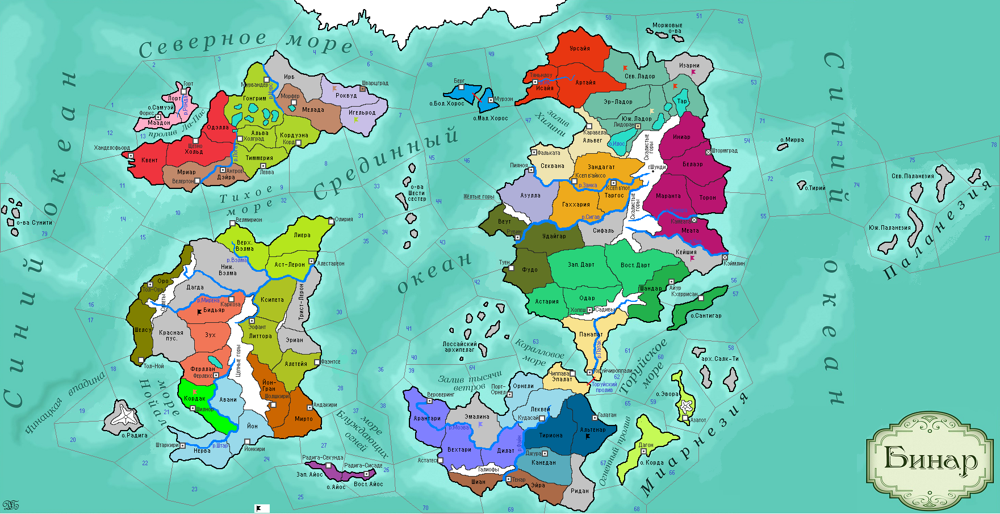

<==
| 8 |
| 9 |
| 10 |
| 11 |
| 12 |
| 13 |
| 14 |
| 15 |
| 16 |
==>
Перламутровая бухта
Колонизаторы Эмалины обнаружили удивительную бухту, выходившую в Залив тысячи ветров. Её вода была перламутрового цвета из-за прораставших на дне зарослей блестящих водорослей. В последствии на берегах бухты находили своё вдохновение художники и поэты, а из причудливых водорослей люди научились делать краски, названные много позже 'эмалью'. [Уникальный природный объект - Бухта. Не занимает слота. +1 кт/о в ход, товар Краски]

16-й ход истории мира Бинар (1175 г.)
· Фабий I Презренный – новый принсипе Терра-Нуэвы.
· Царица Феллерда Ботоллио к 40-ка годам стала проявлять тягу к извращениям. И одним из проявлений оных стало принятие страной в 1175 году асатры в качестве государственной религии.
· Варвары Эриана никак не успокаиваются и вторгаются в Литтору! Эотан I Мудрый принимает титул «эонт». Эонт одерживает победу над врагом и освобождает столичную провинцию.
· Малолетний Йанни I принимает власть в Загорре.
· Дюрандаль и Бьянфанг заключают сепаратный мир с Белаэром, выводящий последний из войны с Лигой Мортис. Оборонительный союз между Белаэром и Ладорианом прекращает свое действие.
· В Бидьяр из-за реки Мирены приходят захватчики!
· В мае 1175 года в Северном Ладоре состоялось Ладорское побоище, в котором силы Бьянфанга и Дюрандаля разгромили войска Ладориана.
· Занкийцы гос-ва Муад’оги, активно порицая традицию разбоя, добиваются её забвения.
· Из-за оскорбления послов, игнорирования интересов князя и заигрывания с соседями Воразун I Великий объявляет начало войны Торуйского княжества против царства Белаэр. Торуйский флот неожиданно атакует г.Камеату, захватывает его и, используя, казалось бы, забытые обычаи варварства, сжигает священный город приверженцев Синарского учения. Другая армада захватчиков вторгается в спящий Штормград и озаряет прибрежные воды заревом грандиозного пожара. В огне погибает знаменитая библиотека синарского народа. Захватчики остаются на пепелище столицы Белаэра.
· Царь Свидар I умирает в 75-ти летнем возрасте толи от старости, толи от того, что в страну перестали поступать чудодейственные лекарства, продлявшие его век… Воспользовавшись бегством брата Эмарила в Ульнар, трон без труда достается Сирину I Хмурому. Новый правитель вводит феодализм и принимает титул «короля».
· Юная Корда, оплакивая смерть отца Геннаро II, принимает власть в Роквудском пакте.
· Во Фриулесе также принимается асатра государственной религией. По этому случаю в г.Велертоне возводится Базилика всех Святых – главная святыня герцогства. Войска, не встречая сопротивления (если не считать ужасного северного ветра) входят в Роквуд и г.Шварцград, наблюдая картину полнейшего обнищания.
· В Вейнаре начинается гражданская война, вызванная жадностью князя Карфаона I. Мятежники захватывают столичную провинцию. Пытаясь умилостивить народ, Карфаон I узаконивает проституцию, но народ продолжает бесноваться, устроив пожар в столице.
· Объединенная армия племён Эриана наносит поражение войскам Астерлии в Трист-Лероне и заставляет их отступить на север!
· Жена князя Темпеста Креуру I родила сына с 6-тью пальцами на руках. Жрецы прокляли дитё, а против отца организовался заговор. Князя убили. Сына же успели спасти и спрятать в лесу, где позднее нарекли именем «Сэуру» и назначили правителем страны.
· Фалько I встает у руля Бьянфанга. Посланному отряду в Эр-Ладор не удается установить контроль над областью.
· Правительница Ульнара Ягдра выхоит замуж за того самого сбежавшего из Белаэра принца Эмарила. Тот рассказывает жене о всех прелестях феодального устройства страны, что в итоге и происходит по указу герцогини.
· Основаны новые города: Ксеп б’айксо (Ксеп Ха Хоц)